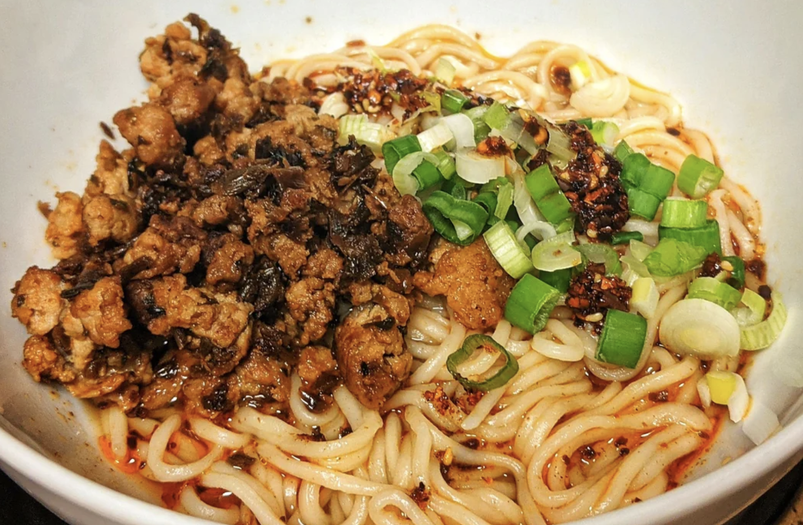

Dan Dan Noodles Recipe

Description
Ultimate Traditional Sichuan Dan Dan Noodles by reddit user u/cookingwithRobin
Dan Dan noodles is a world-famous Sichuan dish. It originated in 1841 and consists of a spicy sauce mixed with minced pork, preserved vegetables, sesame paste, and scallions served over skinny noodles.
Ingredients
- Pork
- 200g 70-80% lean ground pork
- 100g preserved vegetables
- 2 tbsps (30ml) Chinese cooking wine
- 1 tbsp (15ml) soy sauce
- 2 tsps (10ml) dark soy sauce
- Noodles
- 200g all-purpose flour
- 2g salt
- 80-85ml water
- Sauce
- 1 tsp black vinegar
- 1 tsp soy sauce
- 2 tsps chili oil
- 1g sugar
- 1 tsp sesame sauce (sesame paste & sesame oil in 1:1 ratio)
- a pinch of Sichuan peppercorn powder (optional)
- chopped green onions
Steps
- Use medium to high heat, wait for the pan to become hot, add 2 tbsps oil, stir fry the pork until the color turns white.
- Add 2 tbsps of Chinese cooking wine, stir fry the pork until the water evaporates. Add the preserved vegetables and stir fry everything together for about 1 min. Add 1 tbsp of soy sauce and 2 tsps (10ml) of dark soy sauce, keep stir frying it until there is no more liquid in the pan.
- Chop the scallions and make the sesame sauce (sesame paste & sesame oil in 1:1 ratio).
- Dandan noodles are deliberately a little chewy, so the ratio of the flour and water is about 1 : 0.4.
- Mix the flour, salt, and water together, make sure there is no dry ingredients left in the bowl. Cover it and let it rest for 20 min.
- Divide the dough into three pieces, take one piece, press down on the dough to roughly flatten it. I then used a manual pasta maker to make the skinny noodles. Run the dough through the pasta maker starting from the thickest setting. Adjust the knob on the side and make the dough thinner and thinner until the setting is at number 5. Dust some flour on top of the dough, so when you cut the dough into noodles, they won't stick together.
- Boil the noodles for 1 min.
- Add the black vinegar, soy sauce, chili oil, sesame sauce, a pinch of sugar, and a pinch of Sichuan peppercorn powder in the bowl.
- Add 1 oz of the noodle soup along with the noodles. Add the cooked meat and scallions. Mix well and slurp it up!
Back to Home page